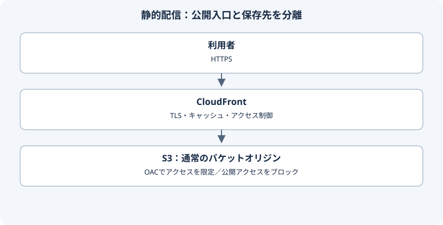
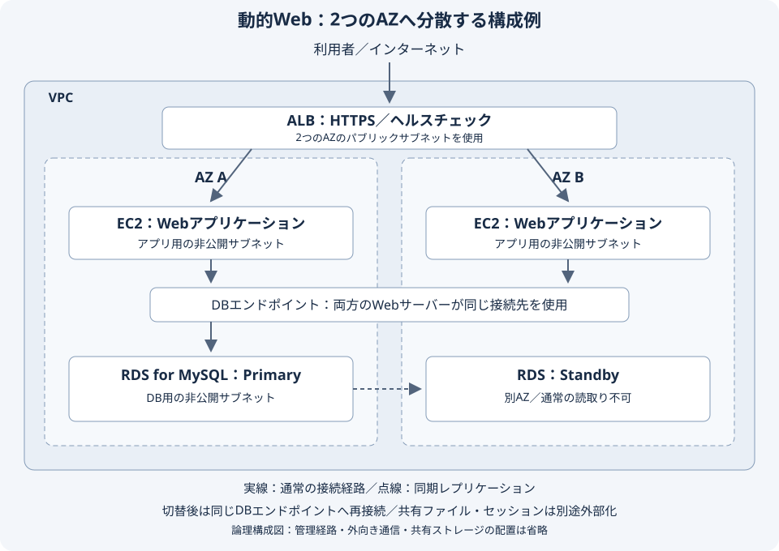
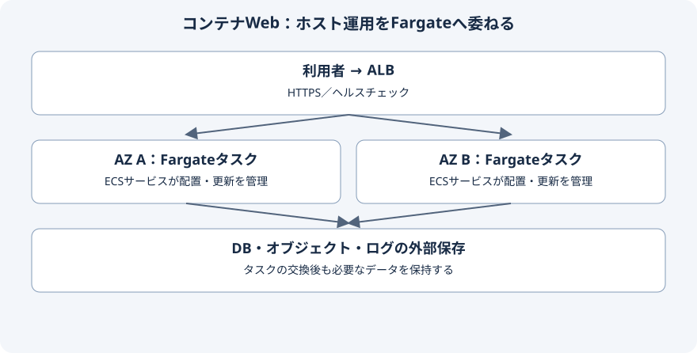

AWS基本設計・アーキテクチャ
業務要件から構成を選び、判断理由・リスク・受入条件を残すための設計例をまとめる
要件から設計判断へつなげる
本シリーズは架空の業務要件に対する設計例であり、実案件での導入実績や負荷試験の結果を示すものではない
仕様の確認日：2026年10月3日／数値目標・保持期間・構成案は案件ごとの合意と検証で確定する
表は横にスクロールして確認できる
| 確認する要件 | 基本設計で決めること | 詳細設計・検証へ渡すこと |
|---|---|---|
| 利用者と処理 | 公開サイトか社内業務か、静的配信か動的処理かを決める | 認証・画面・API・外部接続の一覧を作成する |
| 可用性と復旧 | 業務時間、SLI、SLO、障害別のRTO・RPOを合意する | 切替試験と復元試験の判定基準を定める |
| 性能と費用 | 通常・ピークの負荷、応答時間、月額上限と運用工数を整理する | インスタンス、IOPS、スケール条件を測定して決める |
| 統制と運用 | 責任分界、ネットワーク境界、アクセス・暗号化・監査方針を決める | CIDR、SGルール、IAMポリシー、KMS設定を具体化する |
命名方針や全体構成は基本設計に含められるが、テンプレート作成とWBS更新は設計作業を支える準備・管理活動に当たる
基本設計と詳細設計の境界は契約によって異なるため、成果物とレビュー観点を先に合意する
代表的な構成と採用条件


企業の案内サイトや静的ドキュメントでは、サーバー側の処理が不要であればS3とCloudFrontを候補にする
フォーム、認証、検索、CMS編集機能は別の処理として設計し、静的配信だけで満たせる範囲を明確にする
出典：CloudFrontによるS3オリジンへのアクセス制限


既存のPHPアプリケーションやOS設定への依存が大きいシステムでは、EC2を候補にする
図は論理構成であり、DB待機系への接続はRDSが切り替える／アプリケーションはエンドポイントへの再接続を実装する
Webサーバーを複数にする場合は、アップロード・セッション・バッチの状態を各サーバーのローカルディスクへ閉じ込めない
共有ファイルはEFS、オブジェクト対応の保存処理はS3など、アプリケーションの対応状況に合わせて外部化する


コンテナ化と継続的なリリースが前提なら、ECSとFargateを候補にする
各AZへ必要数のタスクを配置し、1つのAZを失っても残存側が必要な負荷を処理できるかを検証する
判断を残す設計記録の例
表は横にスクロールして確認できる
| 項目 | 例：WordPressを使う企業サイト |
|---|---|
| 前提 | 既存プラグインを継続し、PHPとMySQL互換DBを使う／運用チームはLinux運用に対応する |
| 採用案 | ALB＋EC2の複数AZ構成＋RDS for MySQL Multi-AZを候補にする |
| 他案との比較 | 静的配信では編集・PHP実行を直接代替できない／ECSはコンテナ運用とデプロイの整備が必要になる |
| 残るリスク | 共有ストレージの遅延、プラグイン互換性、二重バッチ、DB再接続を検証する |
| 受入条件 | AZ相当の停止試験、アップロード整合性、バックアップ復元、管理者認証とロールバックを確認する |
設計レビューで説明できる成果物
構成図に加え、採用・不採用の理由、通信一覧、障害シナリオ、概算費用、運用分担、未決事項を残す
費用はコンピュートだけでなく、ALB・NAT・ログ・バックアップ・転送・監視・サポートと運用工数を含めて見積もる
表は横にスクロールして確認できる
| レビュー項目 | 説明できる状態 |
|---|---|
| セキュリティ | 公開経路と管理経路を分け、最小権限、秘密情報の保存先、暗号鍵の管理者を説明できる |
| 運用引継ぎ | 検知から一次対応、エスカレーション、復旧判定まで担当を示せる |
| 根拠と検証 | 公式仕様と設計上の仮定を分け、未確認の事項に検証方法と完了条件を付けられる |